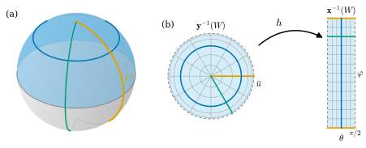

6.3 Change of Parameters and Smooth Functions on Surfaces
Goals
- 두 parametrization 사이의 change of parameters가 diffeomorphism임을 증명하고, 그 증명에서 regular surface의 세 조건이 각각 어디에 쓰이는지 설명할 수 있다.
- parametrization을 바꿀 때 tangent vector의 성분이 Jacobian matrix로 변환되는 법칙을 유도할 수 있다.
- surface 위의 함수와 surface 사이의 map이 매끄럽다는 것을 정의하고, 그 정의가 parametrization의 선택에 무관함을 보일 수 있다.
- \(\R^3\)의 smooth function·map의 restriction, height function, squared-distance function, antipodal map 등의 smoothness를 판정하고, 매끄럽지 않은 예를 들 수 있다.
Prerequisites
- Definition 6.1.1 (regular surface), Proposition 6.1.8 (a regular surface is locally a graph), Example 6.1.7 (standard parametrization of the sphere)
- Lemma 6.2.3 (coordinate representation of a smooth map into a surface), Proposition 6.2.4 (the tangent plane is the image of the total derivative)
- Definition 2.3.1 (diffeomorphism), Proposition 2.3.4, Definition 2.2.11 (smooth map), Proposition 2.2.12
- Definition 4.3.1 (reparametrization), Theorem 1.4.5 (transformation of vector components)
- Proposition 3.2.2 (pointwise criterion for continuity), Theorem 3.3.5
Motivation
Section 6.2에서 tangent plane \(T_pS\)가 parametrization에 무관함을 보였다. 그러나 tangent vector의 성분은 parametrization에 따라 달라진다. sphere의 한 점은 standard parametrization \(\mathbf{x}(\theta, \varphi)\)로도, hemisphere의 그래프 parametrization으로도 나타낼 수 있고, 두 좌표에서 같은 tangent vector의 성분은 다르다. 두 성분은 어떻게 연결되는가?
더 근본적인 질문도 있다. surface 위의 기온이나 높이처럼 surface 위에서 정의된 함수 \(f\colon S \to \R\)가 “매끄럽다”는 것은 무슨 뜻인가? \(S\)는 open set이 아니므로 Definition 2.2.11을 쓸 수 없다. 자연스러운 방법은 좌표로 옮겨 \(f \circ \mathbf{x}\colon U \to \R\)가 smooth인지 보는 것이다. 그런데 이 판정이 뜻을 가지려면 결과가 parametrization의 선택에 무관해야 한다. 다른 parametrization \(\mathbf{y}\)를 쓰면 \(f \circ \mathbf{y} = (f \circ \mathbf{x}) \circ (\mathbf{x}^{-1} \circ \mathbf{y})\)이므로, 두 질문 모두 change of parameters \(\mathbf{x}^{-1} \circ \mathbf{y}\)가 smooth인가에 달려 있다. 곡선에서 reparametrization(Definition 4.3.1)이 맡았던 역할을 surface에서는 이 map이 맡는다.

Change of Parameters
먼저 무엇이 어려운지 짚어 두자.
Theorem 6.3.1 (change of parameters). \(S\)가 regular surface이고 \(\mathbf{x}\colon U \to S\)와 \(\mathbf{y}\colon \bar U \to S\)가 parametrization이며 \(W = \mathbf{x}(U) \cap \mathbf{y}(\bar U) \neq \varnothing\)이라 하자. 그러면 \(\mathbf{y}^{-1}(W)\)와 \(\mathbf{x}^{-1}(W)\)는 \(\R^2\)의 open set이고
는 diffeomorphism이다(Definition 2.3.1). 따라서 \(\mathbf{y}^{-1}(W)\)에서 \(\mathbf{y} = \mathbf{x} \circ h\)이고, 모든 점에서 \(\det Dh \neq 0\)이며 \(D\mathbf{y} = D\mathbf{x}(h)\,Dh\)이다. \(h\)를 \(\mathbf{y}\)에서 \(\mathbf{x}\)로의 change of parameters(매개변수 변환)이라 한다.
이 정리가 말하는 것. 같은 조각을 두 parametrization으로 나타내면, 한 좌표 \((\bar u, \bar v)\)는 다른 좌표 \((u, v)\)의 smooth function이고 그 역도 매끄럽다. 좌표를 바꾸는 일은 미적분의 관점에서 아무것도 잃지 않는다.
Proof idea: \(h\)가 연속임은 조건 (2)에서 바로 나온다. 한 점 \(r_0\) 근처에서 \(\mathbf{x}^{-1}\)을 Proposition 6.1.8(c)의 smooth map \(\Pi\)로 바꾸면 \(h = \Pi \circ \mathbf{y}\)가 되고, 이것은 open set 사이의 smooth map의 합성이다. inverse map은 \(\mathbf{x}\)와 \(\mathbf{y}\)의 역할을 바꾸어 같은 방식으로 다룬다.
Proof. 1단계: 정의역과 치역은 open set이고 \(h\)는 연속인 bijection이다. 조건 (2)에 의해 \(\mathbf{x}(U)\)와 \(\mathbf{y}(\bar U)\)는 \(S\)에서 열려 있으므로 그 교집합 \(W\)도 \(S\)에서 열려 있다. \(\mathbf{y}\colon \bar U \to \mathbf{y}(\bar U)\)가 연속이므로 \(\mathbf{y}^{-1}(W)\)는 \(\bar U\)의 open set이고, \(\bar U\)가 \(\R^2\)에서 열려 있으므로 \(\R^2\)의 open set이다. \(\mathbf{x}^{-1}(W)\)도 같다. \(r \in \mathbf{y}^{-1}(W)\)이면 \(\mathbf{y}(r) \in W \subseteq \mathbf{x}(U)\)이므로 \(h(r) = \mathbf{x}^{-1}(\mathbf{y}(r))\)가 정의되고 \(\mathbf{x}(h(r)) = \mathbf{y}(r) \in W\), 즉 \(h(r) \in \mathbf{x}^{-1}(W)\)이다. 같은 방식으로 \(k = \mathbf{y}^{-1} \circ \mathbf{x}\colon \mathbf{x}^{-1}(W) \to \mathbf{y}^{-1}(W)\)가 정의되고, \(h \circ k\)와 \(k \circ h\)는 identity map이다. \(h\)는 continuous map \(\mathbf{y}\)(값을 subspace \(\mathbf{x}(U)\)에 둔 것, Theorem 3.3.5(c))와 조건 (2)에 의해 연속인 \(\mathbf{x}^{-1}\)의 합성이므로 연속이다. \(k\)도 같다.
2단계: \(h\)는 매끄럽다. \(r_0 \in \mathbf{y}^{-1}(W)\)를 고정하고 \(q_0 = h(r_0)\)라 하자. 조건 (1)과 (3)을 써서 Proposition 6.1.8을 \(\mathbf{x}\)와 \(q_0\)에 적용하면, \(q_0\)을 포함하는 open set \(U_0 \subseteq U\), \(\R^3\)의 open set \(O \supseteq \mathbf{x}(U_0)\), smooth map \(\Pi\colon O \to \R^2\)가 있어서 \(\mathbf{x}(U_0)\) 위에서 \(\Pi = \mathbf{x}^{-1}\)이다. \(\bar U_0 = h^{-1}(U_0)\)로 두면 1단계에서 \(h\)가 연속이므로 \(\bar U_0\)은 \(r_0\)을 포함하는 \(\R^2\)의 open set이다(여기에 조건 (2)가 쓰인다). \(r \in \bar U_0\)이면 \(\mathbf{y}(r) = \mathbf{x}(h(r)) \in \mathbf{x}(U_0)\)이므로
이다. \(\mathbf{y}|_{\bar U_0}\)은 매끄럽고 값이 open set \(O\)에 있으므로 \(h|_{\bar U_0} = \Pi \circ \mathbf{y}|_{\bar U_0}\)은 매끄럽다(Proposition 2.2.12(b)). \(r_0\)은 임의였으므로 \(h\)는 \(\mathbf{y}^{-1}(W)\)의 모든 점 근처에서 매끄럽고, 따라서 매끄럽다. (이 단계는 Lemma 6.2.3을 \(k = 2\), \(\Phi = \mathbf{y}|_{\mathbf{y}^{-1}(W)}\)에 쓴 것과 같다.)
3단계: inverse map도 매끄럽다. \(\mathbf{x}\)와 \(\mathbf{y}\)의 역할을 바꾸어 2단계를 되풀이하면 \(k = h^{-1}\)이 매끄럽다. 따라서 \(h\)는 diffeomorphism이다.
4단계: 나머지 주장. \(r \in \mathbf{y}^{-1}(W)\)이면 \(\mathbf{x}(h(r)) = \mathbf{y}(r)\)이다. \(\mathbf{x}\)와 \(h\)는 open set 사이의 smooth map이므로 chain rule에서 \(D\mathbf{y}(r) = D\mathbf{x}(h(r))\,Dh(r)\)이다. Proposition 2.3.4에 의해 \(Dh(r)\)은 invertible이므로 \(\det Dh(r) \neq 0\)이다.
증명을 되돌아보면 세 조건이 각자 자리가 있다. (1)과 (3)은 Proposition 6.1.8의 inverse function theorem에, (2)는 1단계(\(W\)와 그 preimage가 열려 있고 \(h\)가 연속)와 2단계의 \(\bar U_0\)가 열려 있다는 데에 쓰였다. 조건 (2)를 빼면 정리가 무너진다.
Non-example 6.3.2 (without condition (2), the transition is not even continuous). figure-eight cylinder \(E \times \R\)의 두 map \(\mathbf{x}(u, v) = (\sin 2u, \sin u, v)\) (\(u \in (-\pi, \pi)\))와 \(\mathbf{y}(s, v) = (-\sin 2s, \sin s, v)\) (\(s \in (-\pi/2, \pi/2)\))를 보자. 둘 다 매끄럽고 injective이며 total derivative가 injective이다(Non-example 6.1.3(c)와 같은 계산). Non-example 6.2.6에서 본 대로 \(\mathbf{y}\)의 image는 \(E \times \R\)에 들어 있고, \(s \gt 0\)이면 \(\mathbf{y}(s, v) = \mathbf{x}(\pi - s, v)\), \(s \lt 0\)이면 \(\mathbf{y}(s, v) = \mathbf{x}(-\pi - s, v)\), \(s = 0\)이면 \(\mathbf{y}(0, v) = \mathbf{x}(0, v)\)이다. 따라서
\[ (\mathbf{x}^{-1} \circ \mathbf{y})(s, v) = \begin{cases} (\pi - s,\ v) & (s \gt 0),\\ (0,\ v) & (s = 0),\\ (-\pi - s,\ v) & (s \lt 0) \end{cases} \]
는 \(s = 0\)에서 연속이 아니다. \(\mathbf{x}\)가 조건 (2)를 어기므로(\(\mathbf{x}^{-1}\)이 연속이 아니므로) Theorem 6.3.1의 1단계가 성립하지 않는 것이다.
Verification: verify/v-6-3-smooth-functions.py
이제 구체적인 change of parameters를 끝까지 계산해 보자. 처음 하는 계산이므로 정리가 보장하는 내용을 식으로 모두 확인한다.
Example 6.3.3 (sphere: standard parametrization and hemisphere graph). \(\mathbf{x}\)를 \(S^2(r)\)의 standard parametrization((6.1.4)), \(\mathbf{y}(\bar u, \bar v) = \big(\bar u, \bar v, \sqrt{r^2 - \bar u^2 - \bar v^2}\big)\)를 위쪽 hemisphere의 그래프 parametrization(\(\bar U = B_r(0)\), Example 6.1.5)라 하자.
- 겹치는 곳. \(\mathbf{x}(U) = S^2(r) \setminus C\), \(\mathbf{y}(\bar U) = S^2(r) \cap \{z \gt 0\}\)이므로 \(W = \{z \gt 0\} \cap (S^2(r) \setminus C)\)이다. \(z = r\cos\theta \gt 0\)은 \(\theta \lt \pi/2\)와 같으므로 \(\mathbf{x}^{-1}(W) = (0, \pi/2) \times (0, 2\pi)\)이다. \(\mathbf{y}(\bar u, \bar v) \in C\)는 \(\bar v = 0\), \(\bar u \ge 0\)과 같으므로 \(\mathbf{y}^{-1}(W) = B_r(0) \setminus \{(\bar u, 0) : \bar u \ge 0\}\)이다(Figure 6.3.1(b)).
- 역방향 \(k = h^{-1} = \mathbf{y}^{-1} \circ \mathbf{x}\). \(\mathbf{y}^{-1}\)은 projection \(P_{xy}\)이므로
이다. \(k\)는 반지름 \(r\sin\theta\)인 polar coordinates map(Example 2.1.14)이다. determinant는 \(\det Dk = r^2\sin\theta\cos\theta\cos^2\varphi + r^2\sin\theta\cos\theta\sin^2\varphi = r^2\sin\theta\cos\theta\)이고, \(0 \lt \theta \lt \pi/2\)에서 양수다. (이것은 Example 6.1.7의 minor \(\partial(x, y)/\partial(\theta, \varphi)\)이다.)
- 정방향 \(h = \mathbf{x}^{-1} \circ \mathbf{y}\). Equation (6.1.6)에 \(\mathbf{y}(\bar u, \bar v)\)를 넣는다. \(\bar\rho = \sqrt{\bar u^2 + \bar v^2} \in (0, r)\)라 하면 \(z/r = \sqrt{1 - \bar\rho^2/r^2}\)이고, \(s \in (0, 1)\)에서 \(\arccos\sqrt{1 - s^2} = \arcsin s\)이므로
이다. 곧 \(\theta\)는 disk의 반지름 방향 좌표를, \(\varphi\)는 polar coordinates의 각을 되찾는다. \(\arcsin\)은 \((0, 1)\)에서, \(\bar\rho\)는 원점 밖에서, \(\operatorname{Arg}\)의 (6.1.3)은 \(a \lt 1\)에서 매끄러우므로 \(h\)가 매끄럽다는 것을 이 예에서는 식으로도 볼 수 있다. Theorem 6.3.1은 이런 식 없이도 결론을 준다.
- 한 점에서의 확인. \((\theta, \varphi) = (\pi/4, \pi/2)\)이면 \(k(\pi/4, \pi/2) = (0, r/\sqrt2)\)이고 (6.3.3)에서 \(Dk = \begin{pmatrix} 0 & -r/\sqrt2 \\ r/\sqrt2 & 0 \end{pmatrix}\), \(\det Dk = r^2/2\)이다. Proposition 2.3.4에서 \(Dh(0, r/\sqrt2) = (Dk)^{-1} = \begin{pmatrix} 0 & \sqrt2/r \\ -\sqrt2/r & 0 \end{pmatrix}\)이다. Equation (6.3.4)를 직접 미분해도 같다. 예를 들어 \(\partial\theta/\partial\bar v = \dfrac{1}{\sqrt{1 - \bar\rho^2/r^2}}\cdot\dfrac{\bar v}{r\bar\rho}\)에 \(\bar u = 0\), \(\bar v = \bar\rho = r/\sqrt2\)를 넣으면 \(\sqrt2 \cdot \tfrac1r = \sqrt2/r\)이다.
Verification: verify/v-6-3-smooth-functions.py
change of parameters를 알면 tangent vector 성분의 변환 법칙이 곧바로 나온다. 이것이 동기의 첫째 질문의 답이다.
Proposition 6.3.4 (transformation of tangent vector components). Theorem 6.3.1의 상황에서 \(\bar q \in \mathbf{y}^{-1}(W)\), \(q = h(\bar q)\), \(p = \mathbf{y}(\bar q) = \mathbf{x}(q)\)라 하고, \(h = (u(\bar u, \bar v),\ v(\bar u, \bar v))\)로 쓰자. 그러면
이고(좌변은 \(\bar q\), 우변의 \(\mathbf{x}_u, \mathbf{x}_v\)는 \(q\), partial derivative는 \(\bar q\)에서 계산), \(w \in T_pS\)를 \(w = a\,\mathbf{x}_u + b\,\mathbf{x}_v = \bar a\,\mathbf{y}_{\bar u} + \bar b\,\mathbf{y}_{\bar v}\)로 쓰면
이다.
Proof. Theorem 6.3.1의 \(D\mathbf{y}(\bar q) = D\mathbf{x}(q)\,Dh(\bar q)\)의 두 열을 읽으면 (6.3.5)이다. 그러면 \(w = \bar a\,\mathbf{y}_{\bar u} + \bar b\,\mathbf{y}_{\bar v} = D\mathbf{y}(\bar q)(\bar a, \bar b) = D\mathbf{x}(q)\big(Dh(\bar q)(\bar a, \bar b)\big)\)이다. 한편 \(w = D\mathbf{x}(q)(a, b)\)이고 \(D\mathbf{x}(q)\)는 injective이므로 \((a, b) = Dh(\bar q)(\bar a, \bar b)\)이다.
Smooth Functions on a Surface
이제 둘째 질문으로 가자. \(S\)의 부분집합이 \(S\)에서 열려 있다는 것은 subspace topology(Definition 3.3.1)의 뜻으로 쓴다.
Definition 6.3.5 (smooth function on a surface). \(S\)가 regular surface이고 \(O \subseteq S\)가 \(S\)에서 open set이며 \(f\colon O \to \R\)라 하자. 모든 \(p \in O\)에 대하여 \(p \in \mathbf{x}(U) \subseteq O\)인 parametrization \(\mathbf{x}\colon U \to S\)가 있어서 \(f \circ \mathbf{x}\colon U \to \R\)가 매끄러우면, \(f\)를 smooth function(매끄러운 함수)라 한다. \(f \circ \mathbf{x}\)를 parametrization \(\mathbf{x}\)에 대한 \(f\)의 coordinate representation(coordinate expression)이라 부른다.
\(p \in \mathbf{x}(U) \subseteq O\)인 parametrization은 늘 있다. \(p\) 근처의 아무 parametrization \(\mathbf{x}\)를 잡고 정의역을 open set \(\mathbf{x}^{-1}(O \cap \mathbf{x}(U))\)로 줄이면 된다. parametrization을 open subset으로 제한해도 조건 (1)과 (3)은 그대로이고, image \(\mathbf{x}(U')\)는 \(\mathbf{x}(U)\)에서, 따라서 \(S\)에서 열려 있으므로 조건 (2)도 성립하기 때문이다. 정의는 parametrization을 하나 고르라고 한다. 그 선택이 결과에 영향을 주지 않는다는 것이 다음 명제다.
Proposition 6.3.6 (independence of the parametrization). \(f\colon O \to \R\)가 매끄러우면 \(\mathbf{y}(\bar U) \subseteq O\)인 모든 parametrization \(\mathbf{y}\colon \bar U \to S\)에 대하여 \(f \circ \mathbf{y}\)는 매끄럽다. 또 \(f\)는 연속이다.
Proof. \(\bar q \in \bar U\), \(p = \mathbf{y}(\bar q)\)라 하자. 정의에서 \(p \in \mathbf{x}(U) \subseteq O\)이고 \(f \circ \mathbf{x}\)가 smooth인 parametrization \(\mathbf{x}\)가 있다. \(W = \mathbf{x}(U) \cap \mathbf{y}(\bar U)\)라 하면 Theorem 6.3.1에 의해 \(\mathbf{y}^{-1}(W)\)는 \(\bar q\)를 포함하는 open set이고 그 위에서 \(\mathbf{y} = \mathbf{x} \circ h\)이다. 따라서 \(\mathbf{y}^{-1}(W)\)에서 \(f \circ \mathbf{y} = (f \circ \mathbf{x}) \circ h\)는 smooth map의 합성이다. \(\bar q\)는 임의였으므로 \(f \circ \mathbf{y}\)는 매끄럽다. 연속성: \(\mathbf{x}(U)\) 위에서 \(f = (f \circ \mathbf{x}) \circ \mathbf{x}^{-1}\)은 continuous map의 합성이고(조건 (2)), \(\mathbf{x}(U)\)는 \(p\)의 open neighborhood이므로 Proposition 3.2.2에 의해 \(f\)는 연속이다.
Example 6.3.7 (examples of smooth functions). (a) \(\R^3\)의 함수의 restriction. \(O'\subseteq \R^3\)이 open set이고 \(F\colon O' \to \R\)가 매끄러우며 \(O \subseteq O'\)이면 \(f = F|_O\)는 매끄럽다. 모든 parametrization \(\mathbf{x}\)(\(\mathbf{x}(U) \subseteq O\))에 대해 \(f \circ \mathbf{x} = F \circ \mathbf{x}\)가 open set 사이의 smooth map의 합성이기 때문이다. 특히 다음은 모두 \(S\) 위의 smooth function이다.
- height function(height function) \(h_v(p) = \inner{p}{v}\) (\(v \in \R^3\) 고정). \(v\)가 단위벡터이면 원점을 지나고 \(v\)에 수직인 평면에서 잰 \(p\)의 높이다. coordinate functions \(x, y, z\)는 \(v = e_1, e_2, e_3\)인 경우다.
- squared-distance function \(f(p) = \abs{p - p_0}^2\) (\(p_0 \in \R^3\) 고정).
- distance function \(d(p) = \abs{p - p_0}\), 단 \(p_0 \notin S\). \(F(p) = \abs{p - p_0}\)은 \(\R^3 \setminus \{p_0\}\)에서 매끄럽다(양수의 제곱근).
(b) coordinate functions. parametrization \(\mathbf{x}\colon U \to S\)의 inverse map \(\mathbf{x}^{-1} = (u, v)\colon \mathbf{x}(U) \to U\)의 두 성분 \(u, v\)는 \(\mathbf{x}(U)\) 위의 smooth function이다. 실제로 \(u \circ \mathbf{x}(u, v) = u\)는 매끄럽다. 다른 parametrization \(\mathbf{y}\)로 보면 \(u \circ \mathbf{y}\)는 change of parameters \(h\)의 첫째 성분이고, 이것이 매끄럽다는 것이 Theorem 6.3.1이다.
(c) sphere에서 \(f = z\)의 coordinate representation은 standard parametrization으로 \(r\cos\theta\), 위쪽 hemisphere의 그래프 parametrization으로 \(\sqrt{r^2 - \bar u^2 - \bar v^2}\)이다. 둘 다 매끄럽고, (6.3.4)를 넣으면 \(r\cos(\arcsin(\bar\rho/r)) = \sqrt{r^2 - \bar\rho^2}\)로 서로 맞는다.
Non-example 6.3.8. (a) sphere 위의 \(f(x, y, z) = \abs{z}\)는 연속이지만 매끄럽지 않다. standard parametrization으로 \(f \circ \mathbf{x}(\theta, \varphi) = r\abs{\cos\theta}\)이고, \(\theta = \pi/2\)에서 \(\theta\)에 대한 좌미분과 우미분이 \(-r\)과 \(r\)로 다르다(\(\theta \lt \pi/2\)이면 \(r\cos\theta\), \(\theta \gt \pi/2\)이면 \(-r\cos\theta\)이다). Proposition 6.3.6에 의해 다른 parametrization을 써도 적도에서 매끄러워지지 않는다.
(b) 조건 (3)이 없으면 smoothness가 잘 정의되지 않는다. 평면 \(\{z = 0\}\) 위의 \(f(x, y, 0) = x^{1/3}\)을 보자. parametrization \(\mathbf{x}(u, v) = (u, v, 0)\)으로는 \(f \circ \mathbf{x} = u^{1/3}\)이고 \(u = 0\)에서 미분가능하지 않으므로 \(f\)는 매끄럽지 않다. 그런데 조건 (3)을 어기는 \(\tilde{\mathbf{x}}(u, v) = (u^3, v, 0)\)(Section 6.1의 Common misconception 상자)으로 계산하면 \(f \circ \tilde{\mathbf{x}} = u\)는 매끄럽다. 조건 (3)을 빼면 smoothness가 parametrization에 따라 달라진다. 실제로 \(\mathbf{x}^{-1} \circ \tilde{\mathbf{x}}(u, v) = (u^3, v)\)의 inverse map \((u, v) \mapsto (u^{1/3}, v)\)은 매끄럽지 않으므로 Theorem 6.3.1의 결론이 성립하지 않는다.
Verification: verify/v-6-3-smooth-functions.py
Smooth Maps Between Surfaces
함수의 값이 \(\R\) 대신 다른 surface에 있으면, 양쪽 surface에 모두 좌표를 깔고 좌표끼리의 map을 본다.
Definition 6.3.9 (smooth map between surfaces). \(S_1, S_2\)가 regular surface이고 \(O \subseteq S_1\)이 open set이며 \(\varphi\colon O \to S_2\)가 연속이라 하자. 모든 \(p \in O\)에 대하여 parametrization \(\mathbf{x}_1\colon U_1 \to S_1\)과 \(\mathbf{x}_2\colon U_2 \to S_2\)가 있어서 \(p \in \mathbf{x}_1(U_1) \subseteq O\), \(\varphi(\mathbf{x}_1(U_1)) \subseteq \mathbf{x}_2(U_2)\)이고
가 매끄러우면, \(\varphi\)를 smooth map(매끄러운 사상)이라 한다. \(\hat\varphi\)를 \(\varphi\)의 coordinate representation이라 부른다.
정의에서 \(\varphi\)의 연속성을 요구하는 것은 \(\varphi(\mathbf{x}_1(U_1)) \subseteq \mathbf{x}_2(U_2)\)인 \(\mathbf{x}_1\)을 늘 찾을 수 있게 하기 위해서다. \(\varphi(p)\) 근처의 parametrization \(\mathbf{x}_2\)를 먼저 잡으면 \(\mathbf{x}_2(U_2)\)는 \(S_2\)에서 열려 있고, \(\varphi^{-1}(\mathbf{x}_2(U_2))\)는 \(p\)를 포함하는 open set이므로 \(\mathbf{x}_1\)의 정의역을 그 preimage로 줄이면 된다. 계산에는 다음 판정법이 편리하다. 값을 \(\R^3\)의 점으로 보면 오른쪽 parametrization을 잊어도 된다.
Proposition 6.3.10 (criteria for smoothness and composition). \(S_1, S_2, S_3\)가 regular surface이고 \(O \subseteq S_1\)이 open set이라 하자.
- (a) map \(\varphi\colon O \to S_2\)가 매끄러울 필요충분조건은 \(\mathbf{x}_1(U_1) \subseteq O\)인 모든 parametrization \(\mathbf{x}_1\)에 대하여 \(\varphi \circ \mathbf{x}_1\colon U_1 \to \R^3\)이 (Definition 2.2.11의 뜻으로) smooth인 것이다.
- (b) \(\varphi\)가 매끄러우면 \(\mathbf{x}_1(U_1) \subseteq O\), \(\varphi(\mathbf{x}_1(U_1)) \subseteq \mathbf{x}_2(U_2)\)인 모든 parametrization \(\mathbf{x}_1, \mathbf{x}_2\)에 대해 coordinate representation \(\mathbf{x}_2^{-1} \circ \varphi \circ \mathbf{x}_1\)이 매끄럽다.
- (c) \(\varphi\colon O \to S_2\)와 \(\psi\colon O_2 \to S_3\)가 매끄럽고 \(\varphi(O) \subseteq O_2\)(\(O_2\)는 \(S_2\)의 open set)이면 \(\psi \circ \varphi\)는 매끄럽다. 또 \(g\colon O_2 \to \R\)가 smooth function이면 \(g \circ \varphi\)도 매끄럽다.
Proof idea: 오른쪽 좌표 \(\mathbf{x}_2^{-1}\)을 떼거나 붙이는 일은 Lemma 6.2.3이, 왼쪽 parametrization을 바꾸는 일은 Theorem 6.3.1이 해 준다.
Proof. (a) \(\Rightarrow\): \(\mathbf{x}_1(U_1) \subseteq O\)인 parametrization \(\mathbf{x}_1\)과 \(q \in U_1\)을 잡고 \(p = \mathbf{x}_1(q)\)라 하자. 정의에서 \(p \in \mathbf{x}_1'(U_1') \subseteq O\), \(\varphi(\mathbf{x}_1'(U_1')) \subseteq \mathbf{x}_2(U_2)\)이고 \(\mathbf{x}_2^{-1} \circ \varphi \circ \mathbf{x}_1'\)이 smooth인 parametrization \(\mathbf{x}_1', \mathbf{x}_2\)가 있다. Theorem 6.3.1에 의해 \(h' = \mathbf{x}_1'^{-1} \circ \mathbf{x}_1\)은 \(q\)를 포함하는 open set \(U_q = \mathbf{x}_1^{-1}(\mathbf{x}_1'(U_1'))\)에서 매끄럽고, \(U_q\)에서
\[ \varphi \circ \mathbf{x}_1 = \mathbf{x}_2 \circ \big(\mathbf{x}_2^{-1} \circ \varphi \circ \mathbf{x}_1'\big) \circ h' \]
는 open set 사이의 smooth map 셋의 합성이므로 매끄럽다. \(q\)는 임의였다.
\(\Leftarrow\): 먼저 \(\varphi\)는 연속이다. 각 \(p \in O\)는 \(\mathbf{x}_1(U_1) \subseteq O\)인 parametrization의 image에 들어 있고, 그 open neighborhood \(\mathbf{x}_1(U_1)\) 위에서 \(\varphi = (\varphi \circ \mathbf{x}_1) \circ \mathbf{x}_1^{-1}\)은 continuous map의 합성이기 때문이다(조건 (2), Proposition 3.2.2). 이제 \(p \in O\)와 \(\varphi(p)\) 근처의 parametrization \(\mathbf{x}_2\colon U_2 \to S_2\)를 잡고, \(p\) 근처의 parametrization \(\mathbf{x}_1\)(\(\mathbf{x}_1(U_1) \subseteq O\))의 정의역을 open set \(U_1' = (\varphi \circ \mathbf{x}_1)^{-1}(\mathbf{x}_2(U_2))\)로 줄인다. 그러면 \(\varphi \circ \mathbf{x}_1|_{U_1'}\)은 매끄럽고 값이 \(\mathbf{x}_2(U_2)\)에 있으므로 Lemma 6.2.3에 의해 \(\mathbf{x}_2^{-1} \circ (\varphi \circ \mathbf{x}_1|_{U_1'})\)이 매끄럽다. 이것이 Definition 6.3.9의 조건이다.
(b) (a)에 의해 \(\varphi \circ \mathbf{x}_1\)은 매끄럽고 값이 \(\mathbf{x}_2(U_2)\)에 있으므로 Lemma 6.2.3에 의해 \(\mathbf{x}_2^{-1} \circ \varphi \circ \mathbf{x}_1\)이 매끄럽다.
(c) (a)를 쓴다. \(\mathbf{x}_1(U_1) \subseteq O\)인 parametrization \(\mathbf{x}_1\)과 \(q \in U_1\)을 잡고, \(\varphi(\mathbf{x}_1(q))\) 근처의 parametrization \(\mathbf{x}_2\)를 \(\mathbf{x}_2(U_2) \subseteq O_2\)가 되게 잡는다. \(q\)를 포함하는 open set \(U_q = (\varphi \circ \mathbf{x}_1)^{-1}(\mathbf{x}_2(U_2))\)에서 \(\hat\varphi = \mathbf{x}_2^{-1} \circ \varphi \circ \mathbf{x}_1\)은 (b)에 의해 매끄럽고 \(\varphi \circ \mathbf{x}_1 = \mathbf{x}_2 \circ \hat\varphi\)이다. 따라서 \(U_q\)에서 \((\psi \circ \varphi) \circ \mathbf{x}_1 = (\psi \circ \mathbf{x}_2) \circ \hat\varphi\)이고, \(\psi \circ \mathbf{x}_2\)는 (a)에 의해 매끄러우므로 합성도 매끄럽다. \(g\)의 경우도 같다(\(g \circ \mathbf{x}_2\)는 Proposition 6.3.6에 의해 매끄럽다).
Definition 6.3.11 (diffeomorphism). regular surface 사이의 bijective \(\varphi\colon S_1 \to S_2\)가 매끄럽고 inverse map \(\varphi^{-1}\colon S_2 \to S_1\)도 매끄러우면 \(\varphi\)를 diffeomorphism(미분동형사상)이라 하고, \(S_1\)과 \(S_2\)가 diffeomorphic이라 한다. open set 사이의 bijection에도 같은 말을 쓴다.
Example 6.3.12 (examples of smooth maps and diffeomorphisms). (a) \(\R^3\)의 map의 restriction. \(O' \subseteq \R^3\)이 open set이고 \(\Phi\colon O' \to \R^3\)이 매끄러우며 \(O \subseteq O' \cap S_1\), \(\Phi(O) \subseteq S_2\)이면 \(\varphi = \Phi|_O\colon O \to S_2\)는 매끄럽다. Proposition 6.3.10(a)에서 \(\varphi \circ \mathbf{x}_1 = \Phi \circ \mathbf{x}_1\)이 매끄럽기 때문이다. 예를 들어 다음은 모두 sphere \(S^2(r)\)의 diffeomorphism이다. 각 map은 \(\abs{\Phi(p)} = \abs{p}\)이므로 sphere를 sphere로 보내고, inverse map도 같은 꼴이다.
- antipodal map \(A(p) = -p\) (inverse map은 자기 자신).
- \(z\)축에 대한 각 \(\alpha\)의 회전 \(R_{z,\alpha}(x, y, z) = (x\cos\alpha - y\sin\alpha,\ x\sin\alpha + y\cos\alpha,\ z)\) (inverse map은 \(R_{z,-\alpha}\)).
- \(xy\) 평면에 대한 반사 \((x, y, z) \mapsto (x, y, -z)\) (inverse map은 자기 자신).
또 \(p \mapsto (r'/r)\,p\)는 \(S^2(r)\)에서 \(S^2(r')\)으로 가는 diffeomorphism이다(inverse map \(p \mapsto (r/r')\,p\)).
(b) parametrization은 그 image 위로의 diffeomorphism이다. parametrization \(\mathbf{x}\colon U \to S\)의 정의역 \(U\)를 평면 조각 \(\tilde U = \{(u, v, 0) : (u, v) \in U\}\)로 보자. \(\tilde U\)는 parametrization \(\iota(u, v) = (u, v, 0)\)을 갖는 regular surface이다(Proposition 6.1.4). \(\tilde{\mathbf{x}}(u, v, 0) = \mathbf{x}(u, v)\)로 두면 \(\tilde{\mathbf{x}}\colon \tilde U \to \mathbf{x}(U)\)는 매끄럽다. \(\tilde U\)의 parametrization \(\mathbf{z}\)에 대해 \(\tilde{\mathbf{x}} \circ \mathbf{z} = \mathbf{x} \circ (P_{xy} \circ \mathbf{z})\)이기 때문이다. inverse map \(\iota \circ \mathbf{x}^{-1}\)도 매끄럽다. \(\mathbf{y}(\bar U) \subseteq \mathbf{x}(U)\)인 parametrization \(\mathbf{y}\)에 대해 \(\iota \circ \mathbf{x}^{-1} \circ \mathbf{y} = \iota \circ h\)이고 \(h\)가 매끄럽기 때문이다(Theorem 6.3.1). 그러므로 regular surface는 국소적으로 평면의 open set과 diffeomorphic이다.
Non-example 6.3.13 (a smooth bijection that is not a diffeomorphism). 평면 \(S = \{z = 0\}\)에서 \(\varphi(x, y, 0) = (x^3, y, 0)\)은 매끄럽고(다항식 map의 restriction) bijective이다. 그러나 inverse map \(\varphi^{-1}(x, y, 0) = (x^{1/3}, y, 0)\)은 매끄럽지 않다. parametrization \(\iota(u, v) = (u, v, 0)\)으로 보면 \(\varphi^{-1} \circ \iota = (u^{1/3}, v, 0)\)이 \(u = 0\)에서 미분가능하지 않기 때문이다(Proposition 6.3.10(a)). Non-example 2.3.3의 surface 버전이다.
Summary
- 두 parametrization 사이의 change of parameters \(h = \mathbf{x}^{-1} \circ \mathbf{y}\)는 open set 사이의 diffeomorphism이다(Theorem 6.3.1). 핵심은 \(\mathbf{x}^{-1}\)을 국소적으로 smooth map \(\Pi\)로 바꾸는 것이고, 조건 (2)가 없으면 \(h\)는 연속조차 아닐 수 있다.
- parametrization을 바꾸면 tangent vector의 성분은 \([w]_{\mathbf{x}} = Dh\,[w]_{\mathbf{y}}\)로 변하며, 이것이 contravariant 변환 법칙이다(Proposition 6.3.4).
- surface 위의 함수는 coordinate representation이 매끄러울 때 매끄럽고, 이 정의는 parametrization에 무관하다. \(\R^3\)의 smooth function의 제한(높이, 거리제곱)은 매끄럽고, \(\abs{z}\)는 적도에서 매끄럽지 않다.
- surface 사이의 map은 coordinate representation \(\mathbf{x}_2^{-1} \circ \varphi \circ \mathbf{x}_1\)이 매끄러울 때 매끄럽다. 실제로는 \(\varphi \circ \mathbf{x}_1\)이 \(\R^3\)값 map으로 smooth인지 보면 된다(Proposition 6.3.10).
- parametrization은 그 image 위로의 diffeomorphism이고, regular surface는 국소적으로 평면과 diffeomorphic이다.
다음 절에서는 smooth map \(\varphi\colon S_1 \to S_2\)의 “differential”을 정의한다. \(\R^n\)에서 total derivative를 곡선으로 계산했던 것처럼(Corollary 2.2.2) surface 위의 곡선을 \(\varphi\)로 보내 그 속도를 보면, tangent plane 사이의 linear map \(d\varphi_p\)가 나온다.
Exercises
Exercise 6.3.1 ★ antipodal map \(A\colon S^2(r) \to S^2(r)\), \(A(p) = -p\)가 diffeomorphism임을 보이고, standard parametrization \(\mathbf{x}\)에 대한 coordinate representation \(\hat A = \mathbf{x}^{-1} \circ A \circ \mathbf{x}\)를 \(0 \lt \varphi \lt \pi\)인 곳에서 구하여라. [dC §2-3 Exercise 1, modified]
Solution
\(A\)는 linear map \(p \mapsto -p\)의 restriction이고 \(\abs{-p} = \abs{p}\)이므로 \(S^2(r)\)을 \(S^2(r)\)로 보낸다. Example 6.3.12(a)에 의해 매끄럽고, \(A \circ A = \id\)이므로 inverse map도 \(A\)이며 매끄럽다. 따라서 diffeomorphism이다. \(-\mathbf{x}(\theta, \varphi) = (r\sin\theta\cos(\varphi + \pi),\ r\sin\theta\sin(\varphi + \pi),\ r\cos(\pi - \theta))\)이다. 실제로 \(\cos(\varphi + \pi) = -\cos\varphi\), \(\sin(\varphi + \pi) = -\sin\varphi\), \(\sin(\pi - \theta) = \sin\theta\), \(\cos(\pi - \theta) = -\cos\theta\)이다. \(0 \lt \varphi \lt \pi\)이면 \(\varphi + \pi \in (\pi, 2\pi)\)이고 \(\pi - \theta \in (0, \pi)\)이므로 \(A(\mathbf{x}(\theta, \varphi)) = \mathbf{x}(\pi - \theta, \varphi + \pi)\)이다. 따라서 \(\hat A(\theta, \varphi) = (\pi - \theta,\ \varphi + \pi)\)이고 이것은 매끄럽다.
Verification: verify/v-6-3-smooth-functions.py
Exercise 6.3.2 ★ \(S\)가 regular surface일 때 \(p = (x, y, z) \in S\)를 \(xy\) 평면 \(\{z = 0\}\)으로의 수직 projection \((x, y, 0)\)으로 보내는 map \(\psi\colon S \to \{z = 0\}\)이 smoothness를 보여라. 또 \(S = S^2(r)\)이면 \(\psi\)는 diffeomorphism이 아니지만, 위쪽 open hemisphere \(H = S^2(r) \cap \{z \gt 0\}\)으로 제한한 \(\psi|_H\)는 \(H\)에서 open disk \(D_r = \{(x, y, 0) : x^2 + y^2 \lt r^2\}\) 위로의 diffeomorphism임을 보여라. [dC §2-3 Exercise 2, modified]
Solution
\(\psi\)는 linear map \(\Phi(x, y, z) = (x, y, 0)\)의 restriction이고 값이 regular surface \(\{z = 0\}\)(Example 6.1.2)에 있으므로 Example 6.3.12(a)에 의해 매끄럽다. sphere에서는 북극과 남극 \((0, 0, \pm r)\)이 모두 원점으로 가므로 \(\psi\)는 injective가 아니고, 따라서 diffeomorphism이 아니다.
\(H\)는 \(S^2(r)\)의 open set이고, \(D_r\)은 open disk 위의 영함수의 그래프이므로 regular surface이다(Proposition 6.1.4). \(p \in H\)이면 \(x^2 + y^2 = r^2 - z^2 \lt r^2\)이므로 \(\psi(H) \subseteq D_r\)이다. 거꾸로 \(\R^3\)의 open set \(\{x^2 + y^2 \lt r^2\}\)에서 smooth map \((x, y, z) \mapsto \big(x, y, \sqrt{r^2 - x^2 - y^2}\big)\)(양수의 제곱근)은 \(D_r\)을 \(H\)로 보내므로, 그 제한 \(\eta\colon D_r \to H\)도 Example 6.3.12(a)에 의해 매끄럽다. \(\psi \circ \eta = \id_{D_r}\)이고, \(H\)의 점은 \(z = \sqrt{r^2 - x^2 - y^2}\)을 만족하므로 \(\eta \circ \psi|_H = \id_H\)이다. 따라서 \(\psi|_H\)는 smooth inverse map \(\eta\)를 갖는 bijection, 곧 diffeomorphism이다.
Exercise 6.3.3 ★ 참인지 거짓인지 판별하고 이유를 대어라. (a) surface 위의 smooth function은 연속이다. (b) change of parameters \(h\)는 언제나 \(\det Dh \gt 0\)이다. (c) \(p\) 근처의 parametrization \(\mathbf{x}\) 하나에 대해 \(f \circ \mathbf{x}\)가 매끄러우면 \(f\)는 \(\mathbf{x}(U)\) 위에서 매끄럽다. (d) smooth bijective \(\varphi\colon S_1 \to S_2\)는 diffeomorphism이다.
Solution
(a) 참. Proposition 6.3.6.
(b) 거짓. \(\mathbf{y}(\bar u, \bar v) = \mathbf{x}(\bar v, \bar u)\)(정의역을 그에 맞게 잡는다)이면 \(h(\bar u, \bar v) = (\bar v, \bar u)\)이고 \(\det Dh = -1\)이다. 부호는 Chapter 7의 방향과 관련된다.
(c) 참. \(\mathbf{x}(U)\)의 모든 점에서 Definition 6.3.5의 parametrization으로 \(\mathbf{x}\) 자신을 쓰면 된다.
(d) 거짓. Non-example 6.3.13.
Exercise 6.3.4 ★ \(U \subseteq \R^2\)가 open set이고 \(f\colon U \to \R\)가 매끄러울 때, 그래프 \(\Gamma(f)\)(Proposition 6.1.4)는 평면 조각 \(\tilde U = \{(u, v, 0) : (u, v) \in U\}\)과 diffeomorphic임을 보여라. 특히 paraboloid \(\{z = x^2 + y^2\}\)은 평면 \(\{z = 0\}\)과 diffeomorphic이다. [dC §2-3 Exercise 3, modified]
Solution
\(\tilde U\)는 영함수의 그래프이므로 regular surface이다(Proposition 6.1.4). \(\varphi\)를 linear map \((x, y, z) \mapsto (x, y, 0)\)을 \(\Gamma(f)\)로 제한한 것이라 하고, \(\psi\)를 \(\R^3\)의 open set \(U \times \R\)에서 smooth map \((x, y, z) \mapsto (x, y, f(x, y))\)을 \(\tilde U\)로 제한한 것이라 하자. 값이 각각 \(\tilde U\)와 \(\Gamma(f)\)에 있으므로 둘 다 Example 6.3.12(a)에 의해 매끄럽다. \(\Gamma(f)\)의 점은 \((x, y, f(x, y))\) 꼴이므로 \(\psi \circ \varphi = \id_{\Gamma(f)}\)이고, \(\varphi \circ \psi = \id_{\tilde U}\)이다. 따라서 \(\varphi\)는 diffeomorphism이다. paraboloid는 \(U = \R^2\), \(f(u, v) = u^2 + v^2\)인 경우이고 이때 \(\tilde U\)는 평면 \(\{z = 0\}\) 전체다.
Exercise 6.3.5 ★★ Example 6.3.3의 점 \(p = \mathbf{x}(\pi/4, \pi/2) = \mathbf{y}(0, r/\sqrt2)\)에서 \(w = \mathbf{x}_\theta\)를 \(\mathbf{y}_{\bar u}, \mathbf{y}_{\bar v}\)의 linear combination으로 나타내어라. (6.3.6)과 직접 계산으로 두 번 구하여라.
Solution
(6.3.6)으로. \([w]_{\mathbf{x}} = (1, 0)\)이고 \([w]_{\mathbf{y}} = Dh^{-1}[w]_{\mathbf{x}} = Dk(\pi/4, \pi/2)\,(1, 0)^{\mathsf{T}}\)이다. 예의 \(Dk = \begin{pmatrix} 0 & -r/\sqrt2 \\ r/\sqrt2 & 0 \end{pmatrix}\)에서 \([w]_{\mathbf{y}} = (0, r/\sqrt2)\), 곧 \(w = \tfrac{r}{\sqrt2}\,\mathbf{y}_{\bar v}\)이다.
직접. \(\mathbf{x}_\theta(\pi/4, \pi/2) = (r\cos\tfrac\pi4\cos\tfrac\pi2,\ r\cos\tfrac\pi4\sin\tfrac\pi2,\ -r\sin\tfrac\pi4) = (0,\ r/\sqrt2,\ -r/\sqrt2)\)이다. 그래프 parametrization에서 \(\mathbf{y}_{\bar u} = (1, 0, -\bar u/\sqrt{r^2 - \bar\rho^2})\), \(\mathbf{y}_{\bar v} = (0, 1, -\bar v/\sqrt{r^2 - \bar\rho^2})\)이고, \((\bar u, \bar v) = (0, r/\sqrt2)\)에서 \(\sqrt{r^2 - \bar\rho^2} = r/\sqrt2\)이므로 \(\mathbf{y}_{\bar u} = (1, 0, 0)\), \(\mathbf{y}_{\bar v} = (0, 1, -1)\)이다. \(\tfrac{r}{\sqrt2}\mathbf{y}_{\bar v} = (0, r/\sqrt2, -r/\sqrt2) = \mathbf{x}_\theta\)로 같다.
Verification: verify/v-6-3-smooth-functions.py
Exercise 6.3.6 ★★ (a) “\(S_1\)과 \(S_2\)는 diffeomorphic이다”가 regular surface 사이의 equivalence relation임을 보여라. (b) (a)와 Exercise 6.3.2를 써서 unit sphere의 위쪽 open hemisphere \(H = S^2(1) \cap \{z \gt 0\}\)이 평면 \(\{z = 0\}\)과 diffeomorphic임을 보여라. [dC §2-3 Exercise 7, modified]
Hint
(b) open disk와 \(\R^2\) 사이의 diffeomorphism \(x \mapsto x/\sqrt{1 - \abs{x}^2}\)(Example 3.2.14(b))을 surface 사이의 map으로 옮긴다.
Solution
(a) reflexivity. \(\id_S\)는 \(\R^3\)의 identity map의 restriction이므로 매끄럽고(Example 6.3.12(a)), 자기 자신이 inverse map이다. symmetry. \(\varphi\)가 diffeomorphism이면 \(\varphi^{-1}\)도 smooth bijective이고 그 inverse map \(\varphi\)가 매끄러우므로 diffeomorphism이다. transitivity. \(\varphi\colon S_1 \to S_2\), \(\psi\colon S_2 \to S_3\)이 diffeomorphism이면 \(\psi \circ \varphi\)는 bijective이고 Proposition 6.3.10(c)에 의해 매끄러우며, inverse map \(\varphi^{-1} \circ \psi^{-1}\)도 같은 이유로 매끄럽다.
(b) Exercise 6.3.2(\(r = 1\))에서 \(H\)는 open disk \(D_1 = \{(x, y, 0) : x^2 + y^2 \lt 1\}\)과 diffeomorphic이다. 이제 \(D_1\)과 평면 \(P = \{z = 0\}\)이 diffeomorphic임을 보이자. \(\R^3\)의 open set \(\{x^2 + y^2 \lt 1\}\)에서 smooth map \((x, y, z) \mapsto (x, y, 0)/\sqrt{1 - x^2 - y^2}\)을 \(D_1\)로 제한한 것을 \(\varphi\), \(\R^3\)에서 smooth map \((x, y, z) \mapsto (x, y, 0)/\sqrt{1 + x^2 + y^2}\)을 \(P\)로 제한한 것을 \(\psi\)라 하자. \(\varphi\)의 값은 \(P\)에 있고, \(\abs{\psi(p)}^2 = (x^2 + y^2)/(1 + x^2 + y^2) \lt 1\)이므로 \(\psi\)의 값은 \(D_1\)에 있다. 둘 다 Example 6.3.12(a)에 의해 매끄럽다. 처음 두 성분만 보면 두 map은 Example 3.2.14(b)의 (3.2.2)의 두 map(\(n = 2\))이고 거기서 서로의 inverse map임을 보였으므로 \(\psi \circ \varphi = \id_{D_1}\), \(\varphi \circ \psi = \id_P\)이다. 따라서 \(D_1\)과 \(P\)는 diffeomorphic이다. (a)의 transitivity에 의해 \(H\)와 \(P\)는 diffeomorphic이다.
Exercise 6.3.7 ★★★ \(O \subseteq S\)가 open set이고 \(f\colon O \to \R\)라 하자. \(f\)가 매끄러울 필요충분조건은 모든 \(p \in O\)에 대하여 \(p\)를 포함하는 \(\R^3\)의 open set \(O'\)과 smooth \(F\colon O' \to \R\)가 있어서 \(O' \cap S \subseteq O\)이고 \(O' \cap S\) 위에서 \(F = f\)인 것임을 보여라. [dC §2-3 Exercise 13, modified]
Hint
\(\Rightarrow\)에는 Proposition 6.1.8(c)의 \(\Pi\)를 쓴다. \(F = (f \circ \mathbf{x}) \circ \Pi\)로 두고 정의역을 알맞게 줄인다.
Solution
\(\Leftarrow\): \(p \in O\)이고 \(\mathbf{x}\)가 \(p\) 근처의 parametrization이라 하자. 정의역을 \(U' = \mathbf{x}^{-1}(O' \cap S)\)(open set)로 줄이면 \(\mathbf{x}(U') \subseteq O' \cap S \subseteq O\)이고 \(f \circ \mathbf{x} = F \circ \mathbf{x}\)는 매끄럽다. 따라서 Definition 6.3.5에 의해 \(f\)는 매끄럽다.
\(\Rightarrow\): \(p \in O\)라 하고 \(p \in \mathbf{x}(U) \subseteq O\)인 parametrization \(\mathbf{x}\)를 잡자. Proposition 6.1.8을 \(q = \mathbf{x}^{-1}(p)\)에 쓰면 \(U_0\), open set \(W\)(\(W \cap S = \mathbf{x}(U_0)\)), open set \(P^{-1}(\Omega)\) 위의 smooth \(\Pi\)가 있다. \(O' = W \cap P^{-1}(\Omega)\)는 \(p\)를 포함하는 open set이고 \(O' \cap S \subseteq W \cap S = \mathbf{x}(U_0) \subseteq O\)이다. \(\Pi\)의 값은 \(U_0\)에 있으므로 \(F = (f \circ \mathbf{x}) \circ \Pi\colon O' \to \R\)는 정의되고, smooth map의 합성이므로 매끄럽다(\(f \circ \mathbf{x}\)는 Proposition 6.3.6에 의해 매끄럽다). \(p' \in O' \cap S\)이면 \(\Pi(p') = \mathbf{x}^{-1}(p')\)이므로 \(F(p') = f(\mathbf{x}(\mathbf{x}^{-1}(p'))) = f(p')\)이다.
(surface 위의 smooth function은 곧 “국소적으로 \(\R^3\)의 smooth function의 제한”이다. 전체를 한꺼번에 늘이는 것은 Chapter 12의 partition of unity로 할 수 있다.)